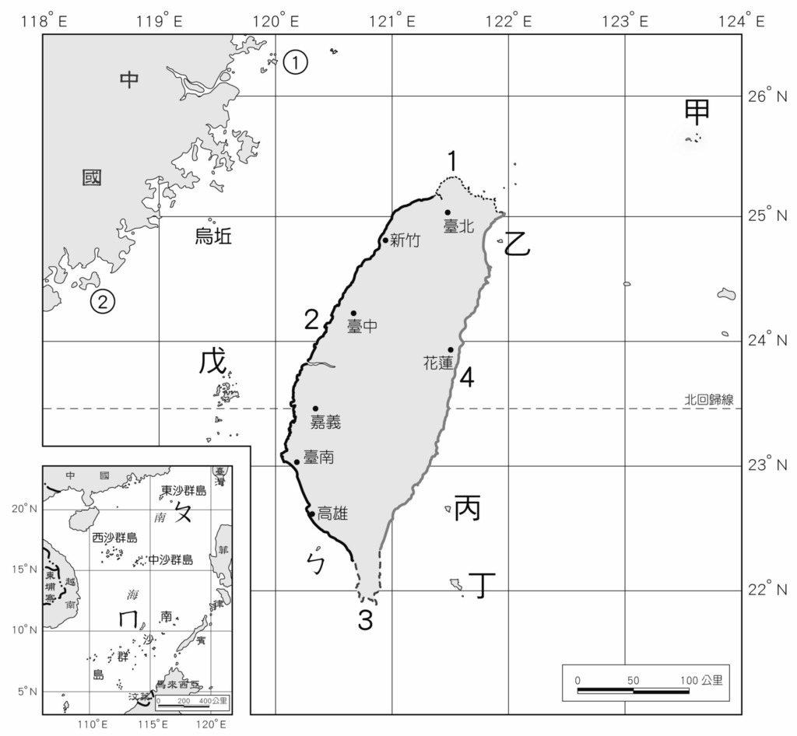

5 / 9 possibilities
Islanders!
Your definition for Taiwanese is based on these islands of Taiwan. This definition also includes people living outside of Taiwan Province (Republic of China), including the peoples of the archipelagos of Kinmen, Matsu and Wuqiu (Kinmen).
Whether it is from the mainland four or five hundred years ago, or from the mainland 40 or 50 years ago, or the aborigines, most of them are Taiwanese, and they are the new Taiwanese who work hard here for the Republic of China. ── President Lee Teng-hui (1998, "The Night of Ma Ying-jeou's Success")
Many of the people living in Kinmen, Matsu and Wuqiu islands are opposed to this definition, given that they view themselves as "Chinese from Fujian Province" and not necessarily "Taiwanese" even though they have citizenships in Taiwan and have the rights to vote and elect for congressional members.